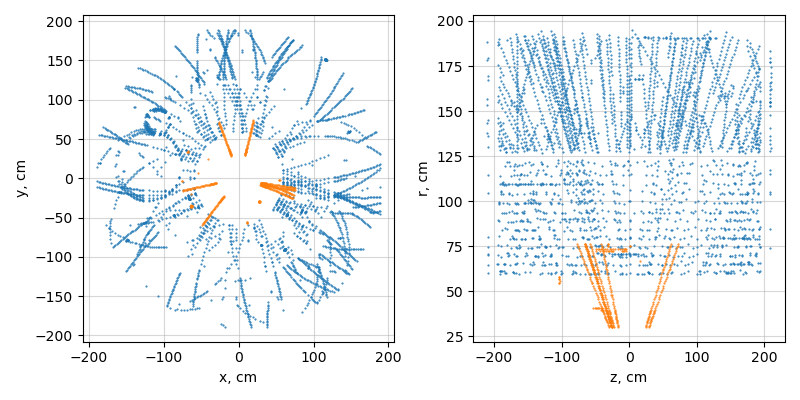

<h1>Validation of Track Reconstruction</h1> <!-- Let's define the problem first An idea to use STAR hits to validate sPHENIX tracking was expressed in our meetings It is important to ask the right question and understand what is that we want to test Using real data to validate tracking is not new --> <div style="font-size: 88%;"> Let's define the problem landscape first - **MC** Typically, the first option to validate tracking performance is to use particles generated in the detector volume and then reconstruct tracks using simulated hits produced by the particles - Knowing the parameters of all original particles (the "truth information") and their association with the hits we can define and calculate a reconstruction efficiency - The problem with simulated data is that it may not fully represent the actual real life environment - **MC + Data** Another common technique is to embed simulated particles into zero-bias data - The environment is as close to real as possible and (some) truth information is available - For example, single track efficiencies estimated this way can be used directly by various physics analyses - The problem is that the data must be available - **Data** Can we estimate the performance without the truth information by using only data? - To calculate efficiencies we still need a reference - For example, it might be possible if the same data is reconstructed with another tracking algorithm (something we trust) - What if there is no data? The situation with sPHENIX... </div>
<h1>STAR Tracking as Reference</h1> <div style="font-size: 88%;"> Can we use data recorded by the STAR TPC to validate sPHENIX tracking performance? - Currently, STAR tracking is a combination of a CA seed finder and a Kalman Fitter (`Sti`) - STAR CA is a sibling of the CA that won the tracking ML challenge (vectorized!, a new version is proposed for integration) - `Sti` is a custom KF well tuned over the years, reliable but 'as is' hardly adoptable to anything - STAR and sPHENIX have different acceptances with a relatively small overlap. So, our options are limited  </div>
<h1>Considering Various Options</h1> **Option 1:** Move STAR hits into the sPHENIX volume - The equations of motion would need to be modified to consistently scale and move the hits from STAR TPC into sPHENIX volume. The tracks would have to be "scaled" as well - The ability to use STAR tracks as a reference would be lost as there is absolutely no good reason to believe that STAR tracking would produce the same result when executed over the hits with coordinates modified in this manner **Option 2:** Don't move STAR hits but use those in the volume overlapping with the sPHENIX acceptance - The overlapping region is roughly between $R \in (60, 80)$cm There is about 4 layers in STAR TPC and about 10 layers in STAR iTPC in this region - If we feed only these 10 layers of real hits to sPHENIX tracking we again loose the ability to do an apple-to-apple comparison with the STAR reconstruction based on all available hits - Re-running `Sti` with a subset of hits selected this way is not possible
<h1>Considering Various Options</h1> **Option 3:** Do not modify STAR hits in any way - This implies running sPHENIX tracking over STAR hits in the context of STAR geometry. The advantage, of course, is that we may use STAR tracks directly to gauge the performance - Assuming sPHENIX tracking is tuned to match the performance of STAR tracking with STAR geometry, should we expect the same performance for the sPHENIX geometry? - sPHENIX tracking is not just ACTS (presumably highly adoptable) but also custom seed finders. For example, one seed finder uses `boost::geometry` - STAR tracking does not use TGeo geometry. That means there will be known differences in the setups which may need to be shown to not bias the final result - Trying to understand the logic of the seed finders and tuning all components to match the performance of STAR tracking would require a significant amount of effort Considered **Options 1, 2,** and **3** so far deal with direct use of STAR hits
<h1>Is There a Better Way?</h1> For the reasons expressed above, using STAR hits directly for validating sPHENIX tracking does not seem as the most efficient way to check its performance - Requires lots of effort without a clear outcome - From a private communication with sPHENIX tracking conveners: - They seem to be inclined to prioritize the work on existing problems rather than divert effort to this "interesting idea" <hr style="width: 50%;"> - We can think of a way to use STAR data "indirectly" to improve and validate tracking - For example, one can try to extract "noise" levels in the region of overlapping acceptance and, perhaps, extrapolate to other inner layers - In the STAR data we have all hit positions, track projections at every layer, and hits associated with tracks. This information should be enough to extract - Based on such "noise" maps one can generate and embed random hits into sPHENIX tracking